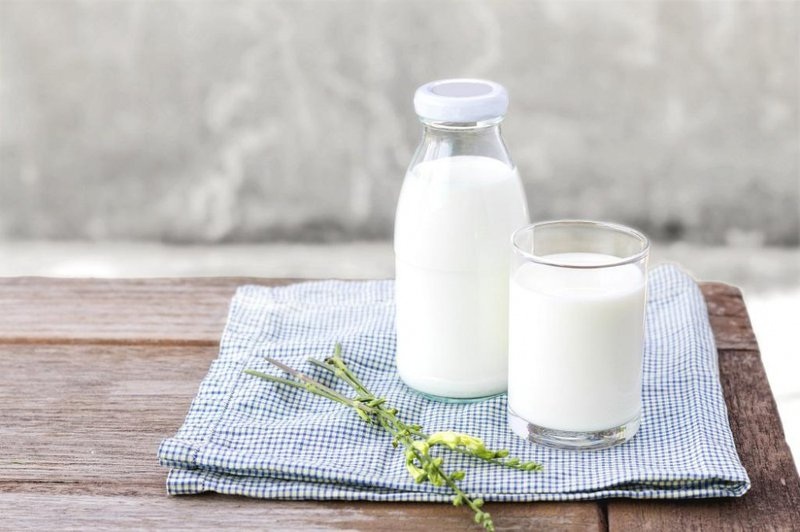

15 LOẠI THỰC PHẨM LÀNH MẠNH GIÚP BÉ
THÔNG MINH HƠN
Bất cứ người làm cha, làm mẹ nào cũng mong muốn cho con của mình phát triển toàn diện cả
về thể chất và trí tuệ. Bên cạnh yếu tố di truyền, thì môi trường, thực phẩm bé ăn hằng
ngày cũng góp phần quan trọng trong việc phát triển trí não của bé. Bởi vì trong một số
thực phẩm có những dường chất vô cùng tốt thúc đẩy sự thông minh. Vậy nên cho bé ăn gì
cho thông minh hơn? Ba mẹ tham khảo 15 loại thực phẩm dưới đây nhé.
– Qủa mọng là những loại quả nhiều nước chẳng hạn như: Dâu tây, việt quất và quả mâm xôi
rất giàu chất chống oxy hóa giúp tăng cường sức khỏe tổng thể và sức khỏe não bộ.
biết, các chất dinh dưỡng trong những loại quả mọng có khả năng làm chậm sự suy giảm nhận
thức. – Các loại quả mọng chứa nhiều flavonoid, đặc biệt là anthocyanin – một loại chất chống oxy hóa có thể vượt qua hàng rào máu não và tác động tích cực đến
khu vực não liên quan đến chức năng học tập và trí nhớ, đó là vùng hồi hải mã. Lý do cho
những kết quả tích cực này có thể là bởi các đặc tính chống oxy hóa và chống viêm của quả
mọng. – Một nghiên cứu tại Bệnh viện Brigham and Women cho thấy việc ăn các loại quả mọng có thể
làm trì hoãn sự “lão hóa nhận thức” tới 2,5 năm
2. Bột ca cao hoặc sô cô la đen:
– Sô cô la đen có thành phần chính là bột ca cao. Bột ca cao nguyên chất chứa các hợp chất
tăng cường trí não, bao gồm một số lượng lớn các phân tử chống oxy hóa, chủ yếu là flavonoid.
Nó có thể tăng cường khả năng nhận thức của bạn, là điều kiện để tạo ra các tế bào thần kinh
mới trong não và cũng cải thiện khả năng hình thành ký ức mới hay tuần hoàn máu lên não.
người ăn sô cô la ít nhất 1 lần/ tuần có trí nhớ tốt hơn. Vì vậy, hãy lựa chọn những loại sô cô la đen ít nhất 70% ca cao để thưởng thức bạn nhé. Hoặc
bạn có thể uống hai cốc ca cao nóng mỗi ngày (trong 30 ngày) để cải thiện trí nhớ và lưu
lượng máu não.
3. Trà:
– Trà là loại đồ uống giảm cân yêu thích của nhiều người. Nó còn là thức uống giúp ngăn ngừa
ung thư. Trong trà có chứa caffeine, một chất tăng cường năng lượng tức thời, nhưng trà cũng
cung cấp axit amin L-theanine làm dịu hơn, có thể giúp bạn thư giãn mà không gây buồn ngủ.
Đặc biệt là trà xanh, có thể giúp giảm nguy cơ rối loạn nhận thức.
bạn. Một nghiên cứu được công bố trên Nghiên cứu Thực phẩm & Dinh dưỡng Phân tử cho thấy EGCG,
một hợp chất vô cơ trong trà xanh, ngăn ngừa mất trí nhớ và các bệnh thoái hóa.. – Một nghiên cứu của Hàn Quốc đã phát hiện ra rằng trà xanh có thể giúp tăng sự tỉnh táo và
tăng cường trí nhớ của bạn. Các nhà nghiên cứu cũng phát hiện ra rằng các chất chống oxy hóa
có trong trà xanh có thể giúp bảo vệ não và giảm nguy cơ mắc chứng mất trí nhớ. Nếu cà phê không phải là thứ bạn yêu thích, hãy thử chuyển sang trà xanh xem sao.
4. Quả óc chó:
– Nhiều loại hạt rất hữu ích cho sức khỏe não bộ, nhưng quả óc chó là loại hạt duy nhất chứa
axit alpha-linolenic (ALA) tuyệt vời. ALA có thể chuyển đổi thành omega-3 DHA và EPA. Đây là
những thành phần quan trọng để tạo nên các tế bào não bộ.
các nhà nghiên cứu cho hay, những người trưởng thành (trong độ tuổi từ 20 và 59 tuổi) có kết quả
test khả năng nhận thức tốt hơn khi ăn quả óc chó trong một thời gian dài.
5. Rau xanh lá đậm:
– Các loại rau xanh lá đậm như rau bina, súp lơ xanh, cải xoăn chứa nhiều chống oxy hóa, bao gồm
vitamin C, vitamin K và beta-carotene, rất cần thiết để tăng cường sức khỏe não bộ. Chúng là một
nguồn cung cấp folate lành mạnh giúp tăng cường tốc độ xử lý thông tin và thu hồi bộ nhớ.
các mạch máu não, khỏi tổn thương. Trên thực tế, một nghiên cứu cũ đã đánh giá chế độ ăn uống của
những bệnh nhân mắc bệnh Alzheimer giai đoạn đầuvà thấy rằng họ nhận được ít vitamin K từ chế độ
ăn uống hơn so với những người không mắc bệnh.
6. Cá nước lạnh:
– Cá nước lạnh bao gồm: cá thu, cá trích, cá ngừ, cá hồi, cá mòi…
– Chúng là một nguồn cung cấp Omega-3 phong phú. Omega-3 rất quan trọng cho hoạt động của não bộ.Bạn có biết, EPA và DHA trong Omega-3 là thành phần chủ chốt để xây dựng các tế bào não, vì phần
lớn não bộ của chúng ta có cấu tạo từ chất béo. Nếu thiếu hụt loại axit amin này, bạn sẽ nhanh chóng
cảm thấy mệt mỏi, ghi nhớ kém, thay đổi tâm trạng và thoái hóa thần kinh. – Một nghiên cứu được công bố trên Tạp chí Dinh dưỡng lâm sàng Hoa Kỳ cho thấy rằng thường xuyên ăn
các loại cá nước lạnh có thể làm giảm 20% nguy cơ mắc chứng mất trí nhớ.
7. Thịt bò:
– Sắt rất quan trọng để tạo ra các tế bào hồng cầu trong máu. Nếu thiếu máu, não bộ sẽ không nhận đủ
oxy, các tế bào não sẽ chết dần, dẫn tới suy giảm khả năng nhận thức, cơ thể mệt mỏi. Thịt bò là thực
phẩm hàng đầu để cung cấp sắt cho cơ thể. Nếu như bạn là người ăn chay, bạn có thể lựa chọn sự thay
thế khác đến từ các loại đậu hay ngũ cốc.
thể, vì thế cũng đừng bỏ qua những loại trái cây giàu vitamin này nhé.
8. Lòng đỏ trứng:
– Nhiều người thường bỏ qua lòng đỏ trứng khi ăn loại thực phẩm này vì cho rằng chúng chứa nhiều
cholesterone. Tuy nhiên, lòng đỏ trứng thực rất tốt cho sức khỏe.
đã phát hiện ra rằng ăn trứng có thể tăng sức mạnh cho não và phần lớn lợi ích có được là do Choline – Một nghiên cứu tại Đại học Y Boston cho thấy lượng choline cao có liên quan đến điểm số tốt hơn
trong các bài kiểm tra trí nhớ và giảm khả năng thay đổi não trước chứng mất trí nhớ
9. Sữa:

– Tương tự như lòng đỏ trứng gà, sữa cũng là một nguồn cung cấp Choline dồi dào. Phụ nữ mang thai cần
thực sự tập trung vào choline, nó đóng vai trò quan trọng cho sự phát triển trí não, sự thông minh của
trẻ sau này.
tuýp 2. Vì thế, bạn đừng bỏ qua thức uống dinh dưỡng này mỗi ngày nhé.
10. Nho:
– Trong một nghiên cứu được công bố trên Tạp chí Nông nghiệp và Thực phẩm, những người lớn tuổi bị suy
giảm nhận thức liên quan đến lão hóa tự nhiên khi thường xuyên uống nước ép nho đã cải thiện tích cực
các chức năng não bộ, đặc biệt là khả năng ghi nhớ.
liên quan tới xương khớp).
11. Hạt bí:
– Nếu muốn phát triển trí thông minh, đừng bỏ qua những hạt bí ngô nhỏ bé. Hạt bí ngô cung cấp ALA
omega-3. Chúng cũng chứa magiê, kẽm, được cho là có vai trò trong việc cải thiện tâm trạng và chức năng
não bộ.
không thử thưởng thức một vài hạt bí sấy khô trong những lúc rảnh rỗi như là xem phim hoặc tán gẫu cùng
bạn bè.
12. Củ cải:
– Củ cải đường chứa hàm lượng nitrat cao, khi vào cơ thể nó chuyển hóa thành oxit nitric và giúp thư giãn
các mạch máu, góp phần làm tăng lưu lượng máu đến não.
bình 65,4 tuổi, đã tập thể dục và uống nước ép củ cải đường trong vòng 6 tuần. Kết quả thu được rằng mạng
lưới não của họ có ngoại hình tương tự như những người trẻ tuổi, khả năng ghi nhớ và nhận thức cũng được
cải thiện đáng kể. – Lưu ý rằng cần thêm các nghiên cứu để xác minh tác dụng thực sự của củ cải đường với hệ thần kinh. Thế
nhưng, xét về khía cạnh dinh dưỡng, nó thực sự là loại rau củ lành mạnh đáng để bạn thêm vào khẩu phần ăn
uống hằng ngày.
13. Nghệ vàng:
– Lợi ích với sức khỏe của củ nghệ dường như là vô tận, củ nghệ được nhắc đến nhiều với khả năng làm giảm
các cơn đau dạ dày và các vấn đề liên quan đến rối loạn tiêu hóa.
một nghiên cứu năm 2016 trên Tạp chí Dinh dưỡng Anh cho thấy một nhóm người lớn tuổi được bổ sung chất
curcumin có mức suy giảm khả năng nhận thức thấp hơn so với những người không sử dụng curcumin. – Củ nghệ được cũng được coi là một loại thuốc chống viêm tự nhiên. Nó có thể chữa lành các vết thương nhỏ
trên da mà không để lại sẹo. Vì thế, đây thực sự là một loại gia vị rất tốt cho sức khỏe, bạn có thể uống
tinh bột nghệ mật ong hoặc thêm nó trực tiếp trong các món ăn hằng ngày để cải thiện sức khỏe não bộ cũng
như hệ tiêu hóa của mình.
14. Đậu:
– Đậu cung cấp chất xơ và protein, giúp bạn no lâu hơn để cung cấp năng lượng duy trì. Đậu cũng chứa ALA
Omega-3, magie để hỗ trợ sự phát triển và chức năng của não. Ngoài ra, đậu cũng cung cấp carbohydrate, được
chuyển đổi thành glucose để cung cấp năng lượng cho não bộ.
15. Dầu ô liu:
– Dầu ô liu cung cấp polyphenol có lợi cho sức khỏe. Một nghiên cứu năm 2016 trên tạp chí Hiện tại Hóa dược
cho thấy những polyphenol này có thể làm giảm nguy cơ mắc một số bệnh thoái hóa thần kinh như bệnh Alzheimer,
bệnh Parkinson và đột quỵ .